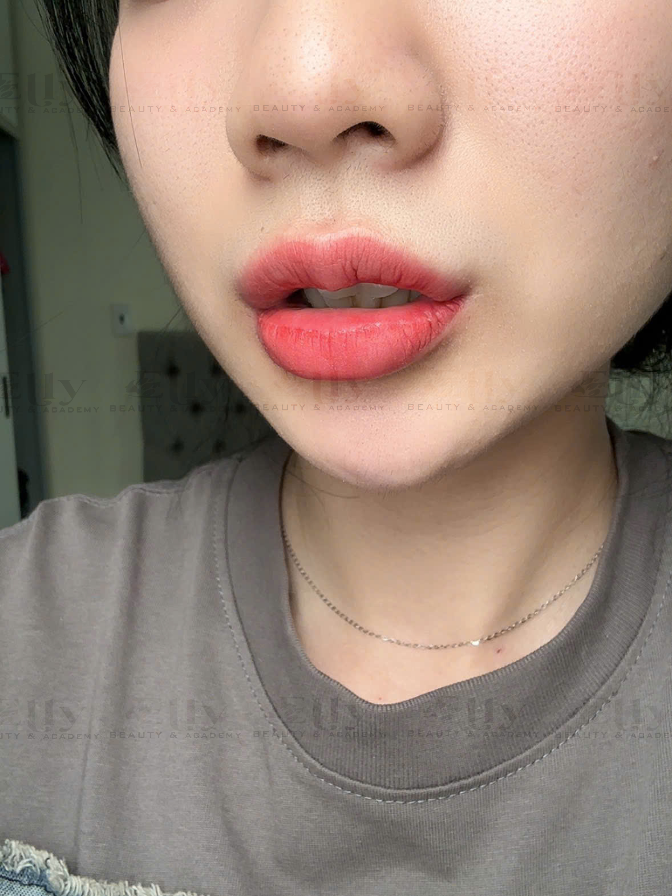
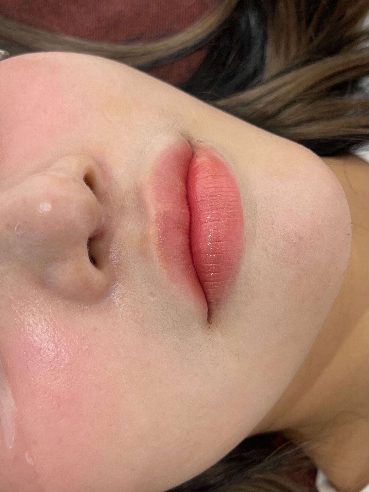

Khử Thâm Môi Có Bị Thâm Lại Không? Sự Thật Không Phải Ai Cũng Biết
Sau khi khử thâm môi, hầu hết khách hàng đều mong muốn duy trì đôi môi hồng hào càng lâu càng tốt. Tuy nhiên, nhiều người vẫn băn khoăn khử thâm môi có bị thâm lại không, liệu sau một thời gian môi có quay về tình trạng ban đầu hay không.
Thực tế, màu môi sau khi khử thâm không chỉ phụ thuộc vào kỹ thuật thực hiện mà còn chịu ảnh hưởng bởi cơ địa, thói quen sinh hoạt và cách chăm sóc mỗi ngày. Hiểu rõ những yếu tố này sẽ giúp bạn duy trì kết quả tốt hơn và hạn chế tình trạng môi sẫm màu trở lại.
Khử Thâm Môi Có Bị Thâm Lại Không?
Đây là câu hỏi được rất nhiều khách hàng tìm kiếm trên Google. Câu trả lời là: có thể xảy ra ở một số trường hợp, tuy nhiên không phải ai cũng giống nhau.
Sau khi môi đã cải thiện sắc tố, màu môi vẫn chịu tác động bởi:
- Cơ địa.
- Ánh nắng mặt trời.
- Thuốc lá.
- Thói quen chăm sóc môi.
- Nội tiết.
- Chế độ sinh hoạt.
Nếu biết cách chăm sóc, nhiều khách hàng vẫn duy trì được đôi môi tươi tắn trong thời gian dài.
Những Nguyên Nhân Khiến Môi Có Thể Thâm Trở Lại
1. Hút Thuốc Lá
Nicotine là một trong những nguyên nhân phổ biến khiến môi sẫm màu theo thời gian. Nếu vẫn duy trì thói quen này, sắc tố môi có thể thay đổi dù đã từng khử thâm.
2. Không Dưỡng Môi
Đôi môi thường xuyên khô ráp dễ bị tổn thương hơn. Việc dưỡng môi đều đặn giúp môi mềm mại và khỏe mạnh hơn.
3. Thường Xuyên Tiếp Xúc Với Ánh Nắng
Tia UV có thể ảnh hưởng đến sắc tố môi. Khi ra ngoài, bạn nên sử dụng sản phẩm bảo vệ môi phù hợp và che chắn cẩn thận.
4. Cơ Địa Tăng Sắc Tố
Một số người có cơ địa tăng sắc tố mạnh hơn bình thường. Đây là yếu tố tự nhiên nên mỗi người sẽ có tốc độ thay đổi màu môi khác nhau.
5. Chế Độ Sinh Hoạt
Thiếu ngủ, căng thẳng kéo dài hoặc chế độ dinh dưỡng chưa cân bằng cũng có thể ảnh hưởng đến sức khỏe làn môi.
Nếu bạn luôn phải dùng son để che môi thâm hoặc cảm thấy thiếu tự tin khi giao tiếp, hãy để kỹ thuật viên của ELLY PMU kiểm tra tình trạng môi trước khi lựa chọn phương pháp phù hợp.
Ưu đãi trong tháng: giá gốc 1.710K, giảm còn 599K. ELLY PMU có hỗ trợ làm tận nhà theo lịch hẹn.


Làm Thế Nào Để Hạn Chế Môi Thâm Trở Lại?
Bạn nên duy trì những thói quen tốt sau đây:
Dưỡng Môi Hằng Ngày
Sử dụng son dưỡng phù hợp giúp môi luôn mềm mại và hạn chế khô nứt.
Uống Đủ Nước
Cơ thể đủ nước giúp môi căng mọng và hỗ trợ quá trình tái tạo tự nhiên.
Hạn Chế Hút Thuốc
Nếu có thể, việc giảm hoặc ngừng hút thuốc sẽ mang lại nhiều lợi ích cho sức khỏe và đôi môi.
Bảo Vệ Môi Khi Ra Ngoài
Che chắn cẩn thận hoặc sử dụng sản phẩm có khả năng chống nắng dành cho môi sẽ giúp hạn chế tác động của tia UV.
Tái Khám Theo Hướng Dẫn
Nếu nhận thấy màu môi thay đổi bất thường hoặc có thắc mắc trong quá trình hồi phục, bạn nên liên hệ cơ sở thực hiện để được kiểm tra.
Những Hiểu Lầm Thường Gặp
Khử Thâm Một Lần Là Môi Hồng Mãi Mãi
Không có phương pháp nào đảm bảo kết quả giống nhau cho tất cả mọi người. Khả năng duy trì còn phụ thuộc vào cơ địa và cách chăm sóc.
Môi Thâm Trở Lại Là Do Khử Thâm Không Hiệu Quả
Không hẳn. Nhiều yếu tố từ lối sống và môi trường cũng có thể ảnh hưởng đến màu môi theo thời gian.
Không Cần Chăm Sóc Sau Khi Môi Đã Đẹp
Đây là sai lầm phổ biến. Việc chăm sóc hằng ngày vẫn rất quan trọng để duy trì đôi môi khỏe mạnh.
Checklist Giúp Môi Hồng Lâu Hơn
Câu Hỏi Thường Gặp
Môi thâm bẩm sinh có dễ bị thâm lại không?
Điều này còn phụ thuộc vào cơ địa và cách chăm sóc sau khi thực hiện.
Sau bao lâu màu môi ổn định?
Thời gian hồi phục sẽ khác nhau ở mỗi người. Bạn nên theo dõi tình trạng môi và chăm sóc theo hướng dẫn.
Nếu môi sậm màu hơn có cần khử thâm lại không?
Bạn nên để kỹ thuật viên kiểm tra trực tiếp trước khi quyết định thực hiện thêm bất kỳ dịch vụ nào.
Việc được tư vấn sớm sẽ giúp bạn hiểu rõ tình trạng môi và lựa chọn giải pháp phù hợp, thay vì tự áp dụng các phương pháp chưa được kiểm chứng.
Kết Luận
Khử thâm môi có bị thâm lại không? Câu trả lời là có thể, nhưng không phải ở tất cả mọi người. Mức độ duy trì kết quả phụ thuộc vào cơ địa, lối sống và cách chăm sóc sau khi thực hiện. Khi hiểu rõ các yếu tố ảnh hưởng và duy trì thói quen chăm sóc phù hợp, bạn sẽ có nhiều cơ hội giữ được đôi môi tươi tắn lâu hơn.